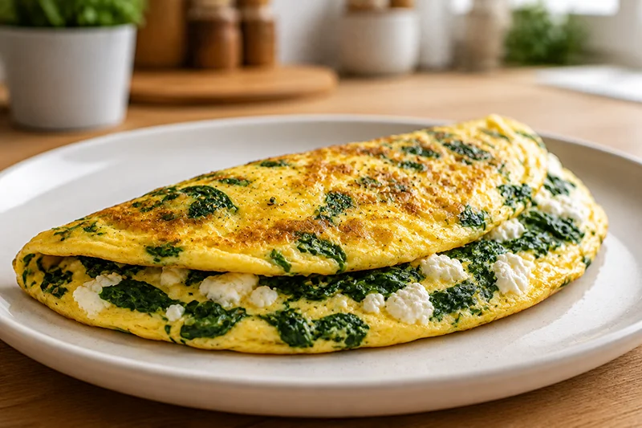

Receta saludable
Tortilla de espinacas y queso cottage
La tortilla de espinacas y queso cottage es una receta sencilla, jugosa y rica en proteínas. Perfecta para disfrutar de una comida ligera o una cena saludable lista en pocos minutos.
Ingredientes
- 2 huevos
- 80 g de espinacas frescas
- 60 g de queso cottage
- 1 cucharadita de aceite de oliva virgen extra
- Pimienta negra al gusto
- Sal al gusto
Preparación
- Lava bien las espinacas y escúrrelas.
- Calienta el aceite en una sartén y saltea las espinacas durante 2 o 3 minutos.
- Bate los huevos con una pizca de sal y pimienta.
- Añade el queso cottage a los huevos batidos y mezcla suavemente.
- Incorpora las espinacas a la mezcla.
- Vierte todo en la sartén y cocina a fuego medio hasta que la tortilla esté cuajada.
- Dale la vuelta con ayuda de un plato y cocina un minuto más.
- Sirve caliente.
Consejo práctico
Puedes añadir unas hierbas aromáticas como orégano o cebollino para darle más sabor sin aumentar apenas las calorías.